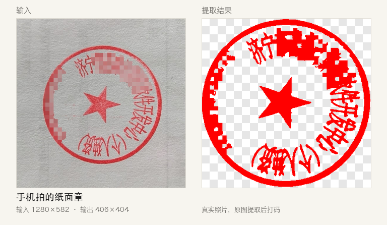
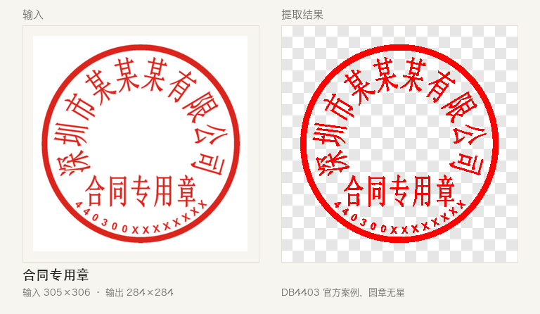
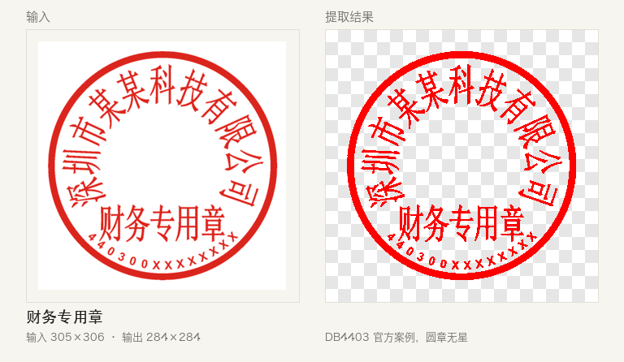
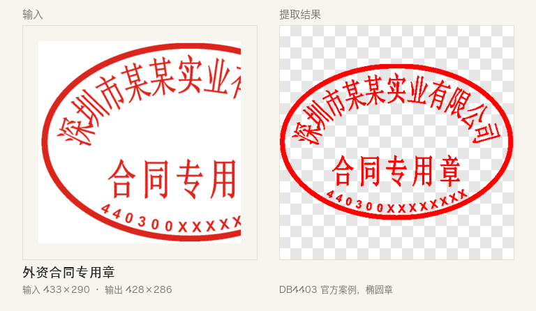
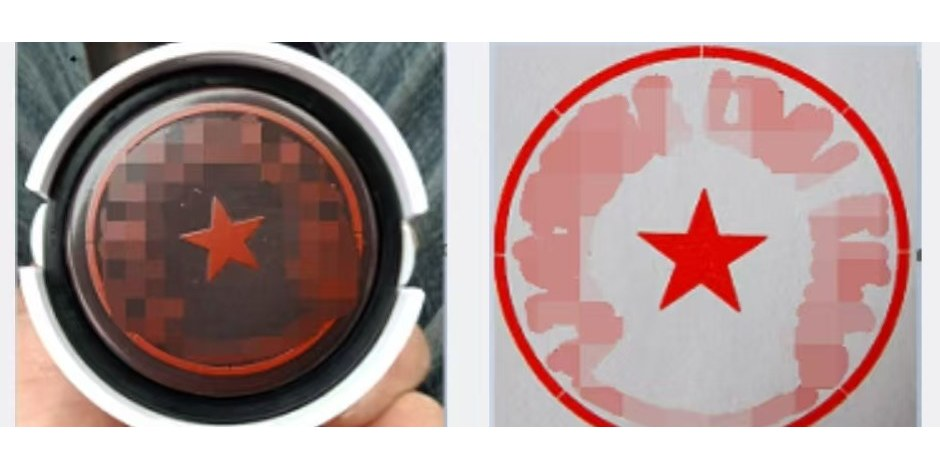
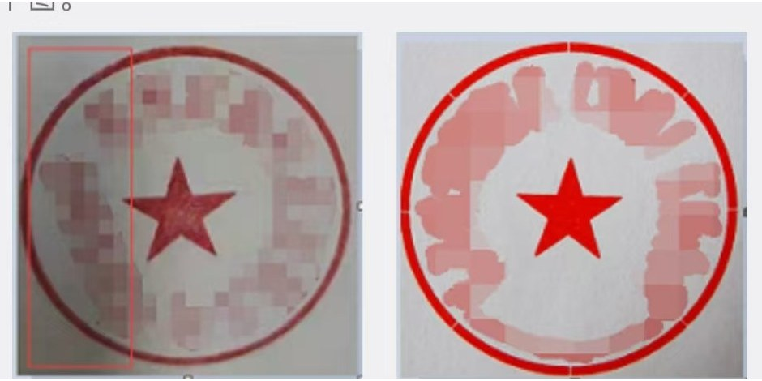
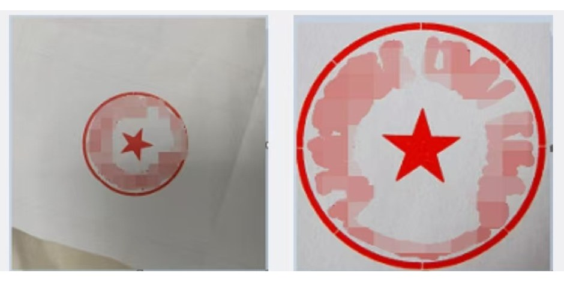

把盖章图片拖到这里
JPG、PNG、WebP；图片只在浏览器本地处理
白纸盖章后拍，光线均匀，不要拍实物印章
处理中…
提取结果是一张图片，不是具备法律效力的电子签章。
上传盖章的纸面照片，自动增强对比度，抠出透明底的红色印章。
把盖章图片拖到这里
JPG、PNG、WebP；图片只在浏览器本地处理
白纸盖章后拍，光线均匀，不要拍实物印章
提取结果是一张图片，不是具备法律效力的电子签章。
四组真实输入与提取结果，默认设置：自动增强开、灵敏度 50、正红。左边是原图，右边是透明底输出。




按电子营业执照小程序的印模流程整理，其他电子章系统也适用。
先在白纸上盖章，再拍纸面。不要直接拍实物印章。光线均匀，不要过暗或有阴影，章面完整入镜。
沿章边裁紧，只保留红色形状，不留大片白边和其他线条。红白不分时调高灵敏度。
导出透明或白底 PNG，核对公司名、编码和类型。审核工作日约 30 分钟，不通过就改图重传。
每组左边是错误示例，右边是正确示例。示例图来自电子营业执照小程序的印模上传说明。

错误 正确
错误 正确
错误 正确 错误
正确
错误
正确